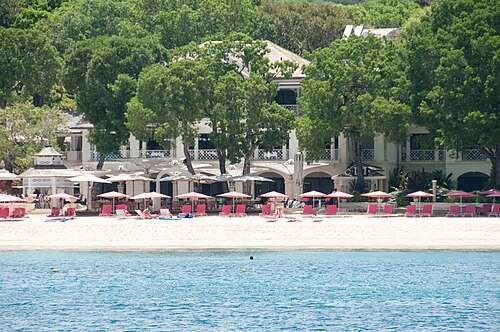
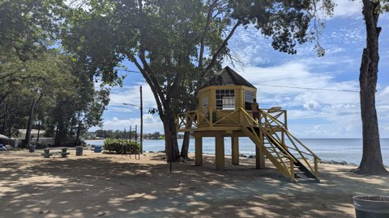

This map shows 6 of the most-searched sights in Holetown as photo spots, ranked by how often people search for them: Sandy Lane, Royal Pavilion, Folkestone Park, Chattel Village and Holetown Monument lead the list. Every spot has a pin on the subject and a phone icon showing where to stand, with tips for shooting it on your phone: which lens to use, how to frame it, a settings tip and the best time of day. Directions and Navigate buttons take you to the standing point on foot or by public transport. 3 spots are free to view; the full map is for members.
The 3 free photo spots
1Sandy Lane

Sandy Lane is a five-star beachfront resort close to Holetown and Paynes Bay. Ronald Tree, a former British politician, opened it in 1961 as a luxury hotel and golf course on what had been a sugar plantation. The original resort was pulled down after a group of Irish businessmen bought it in 1998, and it was rebuilt over about three years. Today it has 113 guestrooms and suites, a five-bedroom villa, four restaurants, seven bars and three golf courses. Tiger Woods married here in 2004.
For a phone photo, the best scene is not the hotel building but the beach along the resort frontage. The hotel's pink loungers and parasols make a bright foreground against pale sand and calm turquoise water, and the shoreline gives you a natural line running across the frame. Stand on the public sand, about 412 m south of the hotel, rather than in the hotel's lounger area, which belongs to the hotel. Keep the horizon level using your gridlines, and let the loungers fill the lower third of the picture. Tap on the water or the loungers to set focus, then slide the exposure down a touch if the sand looks washed out. The beach can be busy, so an early visit may give you fewer people in the frame.
Where it is: Sandy Lane is a beachfront resort close to Holetown and Paynes Bay.
Shooting it on your phone
Lens: Start with the default lens (1x) for the loungers and parasols with sea behind them. Switch to the ultra-wide (0.5x) to take in more of the beach and water, keeping the horizon level so it does not bend at the edges. If your phone has a telephoto lens (2x-5x), use it to pick out a neat row of parasols.
Where to stand: Stand right at the subject: the phone icon on the map marks the spot. From here the photo shows the hotel's pink loungers and parasols along the resort frontage, with white sand and calm turquoise water stretching along the frame. The hotel itself lies to the north. Stay on the public sand and out of the hotel's lounger area.
Framing: Turn on the gridlines and put the horizon on the upper third line, so the loungers and sand fill the lower two-thirds. Crouch a little to bring the parasols up against the sea and sky. Try to keep other beachgoers at the edges of the frame, or wait for a gap.
Settings tip: Tap on the loungers to lock focus, then drag the exposure slider down slightly to keep the sand from turning white. Take a Live Photo too, as the moving water can give you a nicer frame to choose from.
Best time: Late afternoon toward sunset, when the golden light is strongest. For fewer people in the frame, go early in the morning.
2Fairmont Royal Pavilion
The Fairmont Royal Pavilion is a beachfront hotel on Barbados's west coast, set in about 11 acres of gardens. It began life in the 1940s as the Miramar Hotel, the first hotel built on this coast, with just 12 rooms. That original building is now home to the Palm Terrace Restaurant. The Miramar was bought by a private investor in April 1987, restored, and reopened in December 1987. It has since grown into a hotel and private residence estate.
The resort is a large site, so it suits a wide, relaxed view better than one tight shot. Low buildings, planted gardens and open sky make an easy, colourful scene for a phone. Because the grounds are so spread out, step back far enough to fit the main buildings and some greenery together, rather than aiming at one doorway.
Face that way and take a general view first, then move in for details such as planting, a terrace or the building's lines. Keep to the public side of the property and respect the privacy of guests. Take a few frames in both portrait and landscape orientation, because the grounds look quite different in each.
Where it is: On the west coast of Barbados, in the Holetown area of St. James, on the beach side and about half a mile from the nearest shopping centre in Holetown.
Shooting it on your phone
Lens: Start with the default lens (1x) for a natural view of the buildings and gardens. Switch to ultra-wide (0.5x) if you are close and want more of the grounds in the frame. Use telephoto (2x or more, depending on your phone) for architectural details or planting.
Where to stand: Stand right at the subject (on the sand directly in front of the Fairmont Royal Pavilion, looking back at the hotel). The resort's beachfront with palms and turquoise water in the foreground, framed by the hotel's gardens. Keep to areas open to the public and do not walk into guest areas.
Framing: Switch on the gridlines and place the main building on one of the lower lines, leaving plenty of sky above. Include a little foreground greenery to give a sense of depth. Hold the phone level so the roof lines stay straight.
Settings tip: Tap on the building to set focus, then drag the exposure slider down slightly if the sky looks washed out. If the shot feels flat, try portrait orientation as well as landscape.
Best time: Morning or late afternoon usually gives softer light than midday, and gentler shadows on the buildings.
3Folkestone Marine Park

This stop covers the Folkestone Marine Park stretch of Holetown's coast and its neighbour, the Bellairs Research Institute, a marine biology field station on the Barbados west coast. It is a calm, low-key place to photograph: a working seaside research site with the Caribbean just beyond it, rather than a grand monument. The institute was founded in 1954 for McGill University, the Canadian university in Montreal, and was funded at first by a bequest from the British naval commander Carlyon Bellairs, who gave it his name. It sits between the Folkestone Marine Park and Museum to the south and the Coral Reef Club hotel to the north, so the buildings, trees and sea make a good local-scene shot. Just offshore is Folkestone Reef, made up of two flame-shaped formations that researchers call North and South Bellairs. The southern one reaches about 275 metres from shore and the northern one about 107 metres. Take a wide shot first to show the setting, then a closer one of the buildings and shoreline. Keep the horizon level using the gridlines, and be tactful about the people and activity around the site. The reef is under the water, so don't expect it to show clearly in a phone photo from the shore.
Where it is: Just north of the historic town of Holetown, in the parish of St James on Barbados's west coast. It lies between the Folkestone Marine Park and Museum to the south and the Coral Reef Club hotel to the north.
Shooting it on your phone
Lens: Start with the ultra-wide (0.5x) to take in the shoreline, sea and sky together. Switch to the default lens (1x) for a natural view of the institute's buildings. Use telephoto (2x-5x, depending on your phone) to pick out details from 80 metres away.
Where to stand: Stand about 80 m south-west of the subject, at the phone icon on the map, and face north-east.
Framing: Turn on gridlines and place the horizon on the upper or lower line. Include some foreground such as grass, sand or a tree edge to give depth. Take one wide frame of the whole scene and one tighter frame of the buildings with the default lens (1x) or a little zoom.
Settings tip: Tap the sea or sky to focus, then slide the exposure down a little if the bright water looks washed out. Try a Live Photo if there are waves or palms moving in the breeze.
Best time: Late afternoon usually gives softer, warmer light, and the sun would be behind you when facing north-east. Early morning is also a good time and is often quieter.
3 more spots for members
These spots are on the map as grey numbered pins. Where to stand, the phone tips, photos and directions for them come with Explorer membership.
- 4Chattel Village · members
- 5Holetown Monument · members
- 6St. James Parish Church · members
Get every spot with Explorer membership
Explorer opens every spot on every map in the library: where to stand, how to frame it on your phone and how to get there, plus the Xdatrys Maps app with maps saved on your phone for use without signal. $9.99 a month or $59.99 a year; cancel any time.
Join Explorer Compare free and Explorer
Not ready to join?
Get Pocket Lens, our free daily smartphone travel photography newsletter.
Free, and you can unsubscribe at any time. If the form does not show, sign up on our newsletter page.
Questions
What are the top photo spots in Holetown?
The first three on this map are Sandy Lane, Royal Pavilion and Folkestone Park. They are ranked by how often people search for them. The full map has 6.
Where should I stand to photograph Sandy Lane?
Stand right at Sandy Lane: the phone icon on the map marks the spot. Start with the default lens (1x) for the loungers and parasols with sea behind them.
When is the best time to photograph Royal Pavilion?
Morning or late afternoon usually gives softer light than midday, and gentler shadows on the buildings.
How do I get to Folkestone Park?
No station or tram stop serves this spot, so start from Holetown town centre and head north along the coast by road, looking for Folkestone Marine Park.
Credits
Map data © OpenStreetMap contributors (ODbL); base map built with Protomaps from OpenStreetMap data. Photos from Wikimedia Commons, credited under each photo with their licence. Background reading for the free spots: Sandy Lane (resort), Fairmont Royal Pavilion, Bellairs Research Institute (Wikipedia, CC BY-SA). Access rules and opening times change: check before you go.